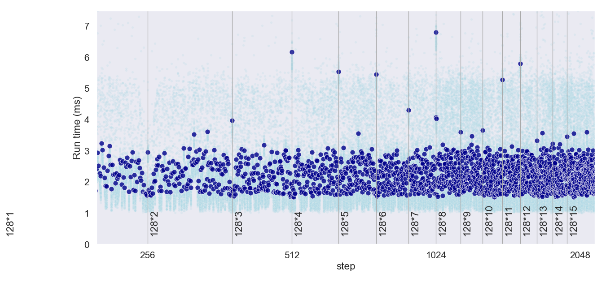

Hardware effects impact performances. This repository contains C++ codes illustrating some of these effects, as well as Python code to plot the results. You can fork this repository and try to reproduce the results, as these performance tests are hardware dependent.
This repository, and all the contained examples, are strongly inspired by:
Remember, Premature optimization is the root of all evil (D.E. Knuth), so don’t spend time trying to apply these tricks to your codebase without measurement. However, I find it interesting to see how hardward architecture can impact performance.
You can clone this repository and regenerate these experiments (and the web page) with your local machine. Feel free to provide correction, precision, and to contribute with new examples.
For each effect, the codes and results are presented in the following pages:
Memory alignement and padding: For a CPU to work efficiently, there are restrictions on the addresses where objects of types are located in memory (alignment). In order to respect these alignements, the compiler sometimes needs to insterts extra bytes (padding) between the the members of user_defined types. This impact memory consumption…
Impact of cache lines: A cache is a smaller, faster memory, located closer to a processor core, which stores copies of the data from frequently used main memory locations. When loading data, the processor loads a whole cache line (spatial locality), and the data tends to remain in the cache for a few time (temporal locality). Accessing data that are already in a cache makes computations faster than reloading the data from the main memory.
L1, L2 and L3 caches TODO
Cache associativity TODO
